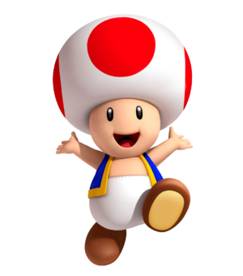

This website is awesome
This website has some subtext that goes here under the main title. It's a smaller font and the color is lower contrast

Some random information.

Mario is a plumber who typically goes on adventures to rescue Princess Peach from the series' primary antagonist, Bowser. Mario first appeared in the 1981 arcade game Donkey Kong, and has since appeared in many other games in the series, as well as in various spin-offs and crossover titles. He is considered one of the most iconic and recognizable characters in the history of video games.

Luigi is the younger brother of the main protagonist, Mario. Luigi is portrayed as a tall, thin man with a mustache and wearing green clothes and a hat with an "L" on it. He first appeared in the 1983 arcade game Mario Bros. and has since appeared in many other games in the Mario franchise, often as a playable character and sometimes as a secondary protagonist. He is known to be less confident than his older brother Mario, but is still a capable hero in his own right.

Toad is a small, anthropomorphic mushroom with a large head and a mushroom cap. Toad is often portrayed as a loyal and helpful companion to Mario and Luigi, and he is known for his speed and jumping abilities. He has appeared in various Mario games as a playable character, non-playable character, and as a helper. Toad is also known for his recurring role in spin-off titles such as Mario Kart and Mario Party. He is often depicted as the sidekick of the Mario Bros.

Yoshi is a dinosaur-like creature who is a friend and ally of the main character, Mario. Yoshi first appeared in the game Super Mario World in 1990 and has since appeared in many other Mario games, as well as in his own spin-off games. He is known for his ability to eat enemies and his long tongue.
This is an inspiring quote, or a testimonial from a customer. Maybe it's just filling up space, or maybe people will actually read it. Who knows? All I know is that it looks nice.
-Thor, God of Thunder
Call to action! It's time!
Sign up for our product by clicking that button right over there!